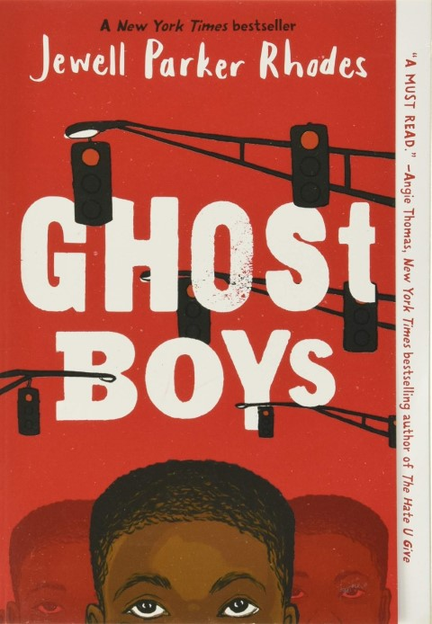

Here is my opinion and reveiw about the book Ghost Boys by Jewel Parker Rhodes.

The Book Ghost Boys by Jewel Parker Rhodes is about the life journey of Jerome, a 12-year-old black boy who was shot and killed by a white Police officer due to racial biases. Readers will get to view and experience the truth about Jerome’s killing and how this affects his parents and the community around him. Readers will also learn about a historical figure named Emmit Till and his life story of how he was killed.
Jerome was an ordinary boy who went to middle school with his sister. He was constantly bullied and picked on by three other boys named Eddie, Snap, and Mike. A new student names Carlos started coming to Jerome’s school. He and Jerome make friends. One day when school was over, and everyone was leaving the building, Carlos gave his toy gun to Jerome to play with. Later on, Jerome is shot and killed by a police officer. His spirit rises from himself. Jerome experiences and watches his court trial and makes an exciting relationship with Sarah, the daughter of the police officer who killed him now that this has happened. He also has the help of Emmet Till to realize what has happened and how historical racism could have led to his and other boys’ killings.
While I think Ghost Boys is a great book to read, and it can teach kids multiple lessons, I would recommend it for pre-teens ages 10+ and mature because of the sensitive topics, including racism, racial killings, violence, and more. I think this book would bring awareness to kids that things like this are happening worldwide. I also think kids would learn lessons about being more diverse and not judging a person based on their looks or where they’re from.
I like the book Ghost Boys because of the lessons and story in this book. As I read this book, I learned that Emmit Till, Jerome, and others were killed due to their skin color. What happened to these boys in the story can connect to the killing of George Floyd in 2020, which was also racially motivated. As mentioned, this book helped me better understand what is happening today. It also helped me raise awareness of addressing discriminative situations.